Phase 5 review: selection and annotation
Each mock (left) beside the app in the same state: Moby-Dick, Chapter 1, 1280 × 800 (Screen 15 at 760 × 1000), in the mock's theme, captured from the app's own window on the reference Mac (WebKit 19618). The pages break at different words from the mocks, because the mocks set a fixed excerpt; the passages are the mocks' passages. Approving makes these captures the Phase 5 baselines (item 11). Items 12 and 13 in docs/pending-approvals.md refer to what is marked decide.
Screen 06 — Text selection

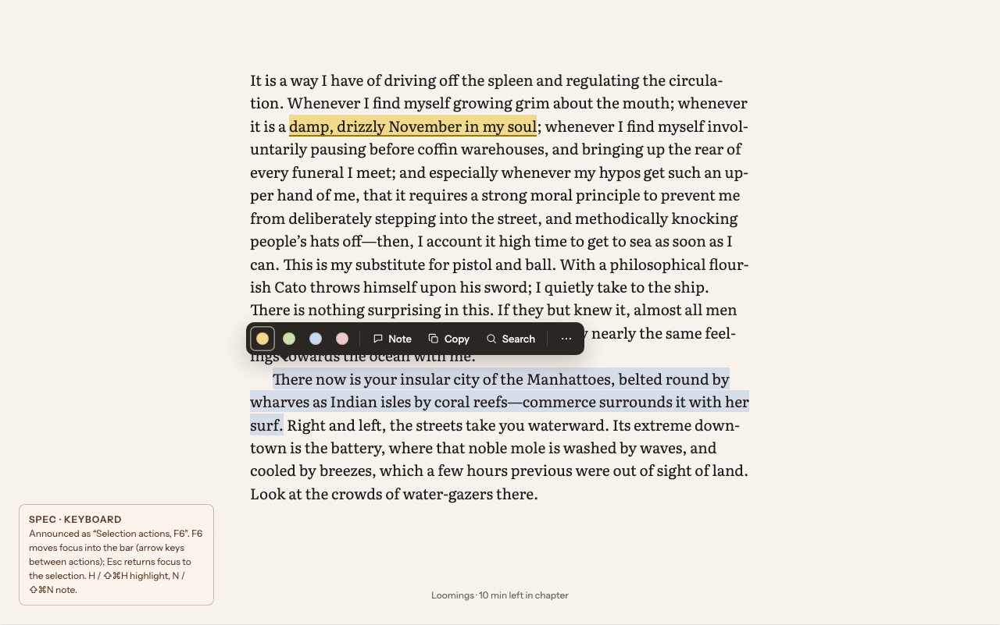

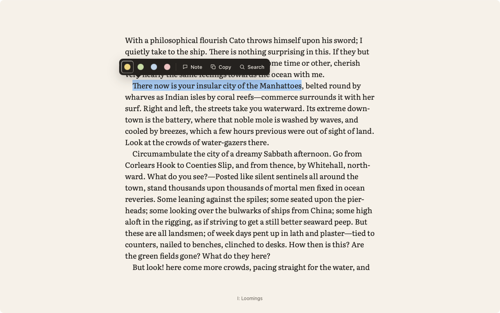
- Matches the mock:
- the bar sits 12 px above the first selected line and starts 34 px before it, with the tail 15 px into the selection;
- the ink ground and the last-used colour's ring;
- four dots, then Note, Copy and Search with their icons;
- the system selection colour (S4);
- the yellow highlight is a tint behind the text with a 2 px underline.
- later phaseThe “⋯” extension actions are hidden until an extension adds some (P10, Phase 7). A1 says hidden actions stay hidden, not greyed.
- expectedThe chapter's line shows no “min left” yet on a fresh profile (B2 needs reading pace).
Screen 07 — Margin note

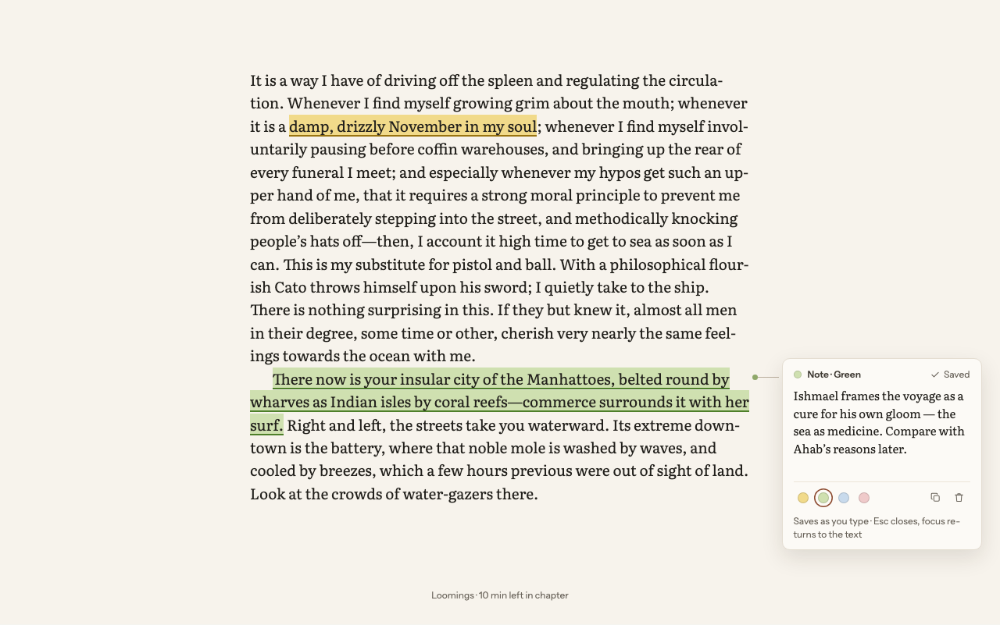

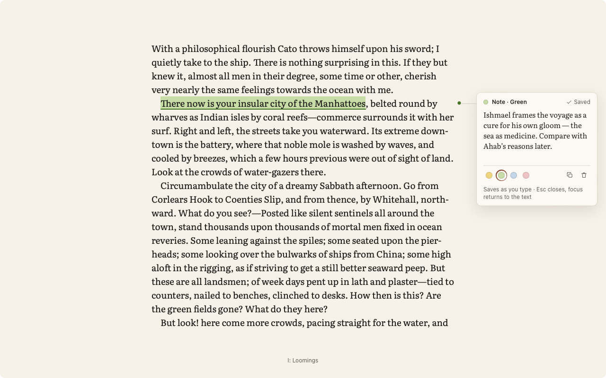
- Matches the mock:
- a 256 px card 36 px right of the dot, joined by a hairline;
- the header shows “Note · Green” and “✓ Saved” in a status region;
- the note is set in Literata; the colours below it have the current one ringed in accent;
- Copy and Delete, and the hint.
- decideThe dot is drawn in the highlight's underline colour; the mock's
#8FA86Ais not a token (item 13).
Screen 08 — Navigator, Notes

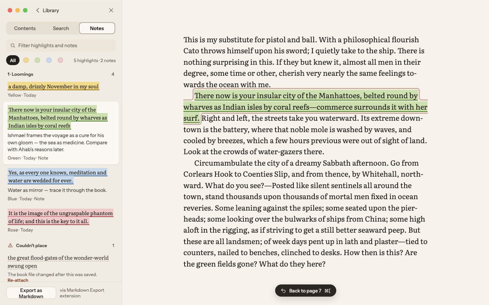

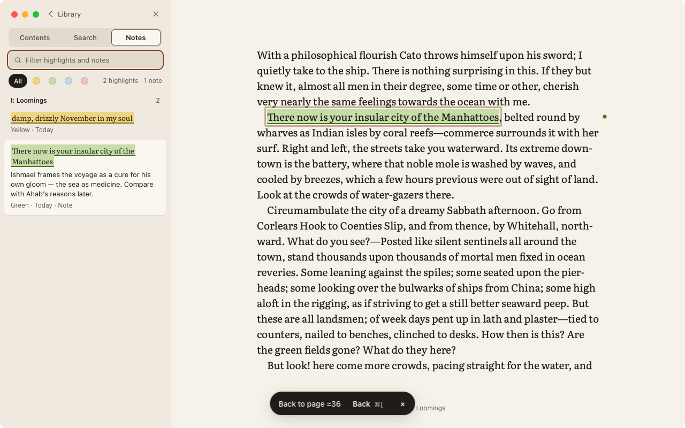
- Matches the mock:
- the tabs, the filter field, All and the colour chips, and “N highlights · M notes”;
- the chapter group with its count;
- each quote in its colour, with the note and “Colour · Today · Note”;
- the chosen one raised, and the passage pulsing with a 3 px accent outline;
- the Back message with ⌘[.
- expectedTwo highlights here, against five in the mock. The “Couldn't place” group appears only when there is something in it; the end-to-end check
A9-reimportexercises it. - expectedThe Back message is the standard message (Phase 3, approved); the mock draws a smaller pill.
- later phase“Export as Markdown” stays hidden until the Markdown Export extension (Phase 7).
Screen 14 — Night, controls and selection

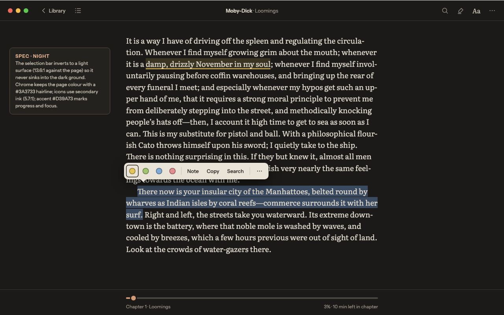

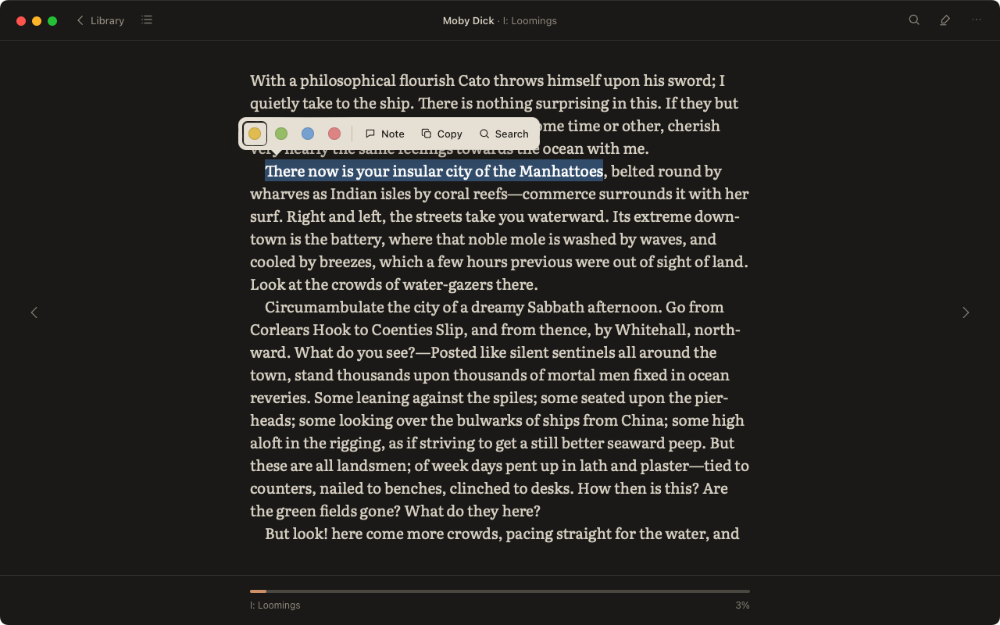
- Matches the mock:
- the bar inverts to a light surface (13.6:1 against the page, tested);
- the Night colour dots, and the system selection colour;
- the chrome keeps the page colour with its hairline.
- decideThe actions keep their icons, as in Screen 06. The mock shows text only here (item 13).
- later phaseAa arrives in Phase 6. The top bar is otherwise complete (item 4).
Screen 15 — Narrow window, note as a sheet

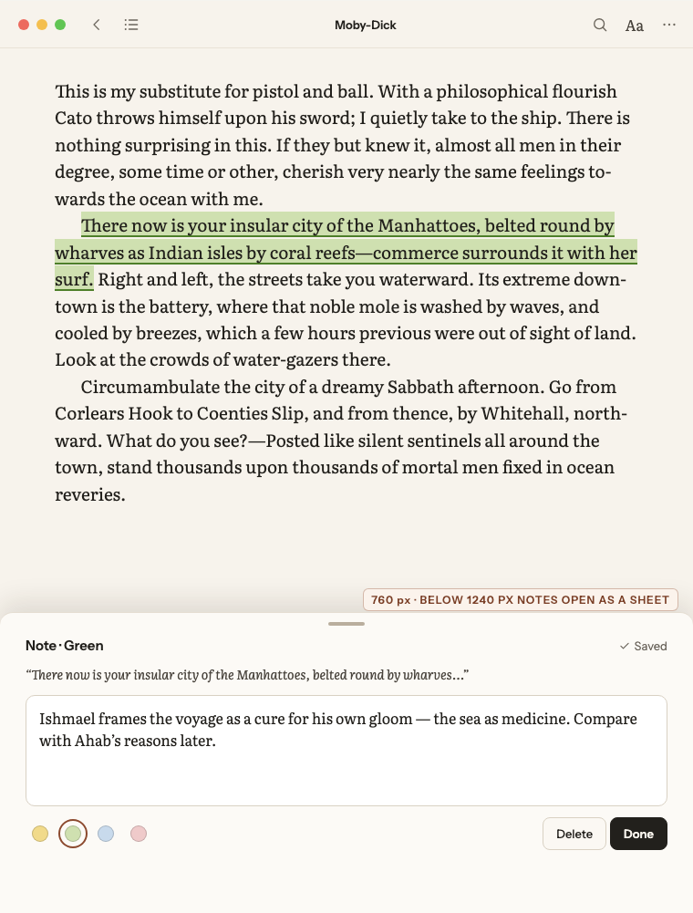

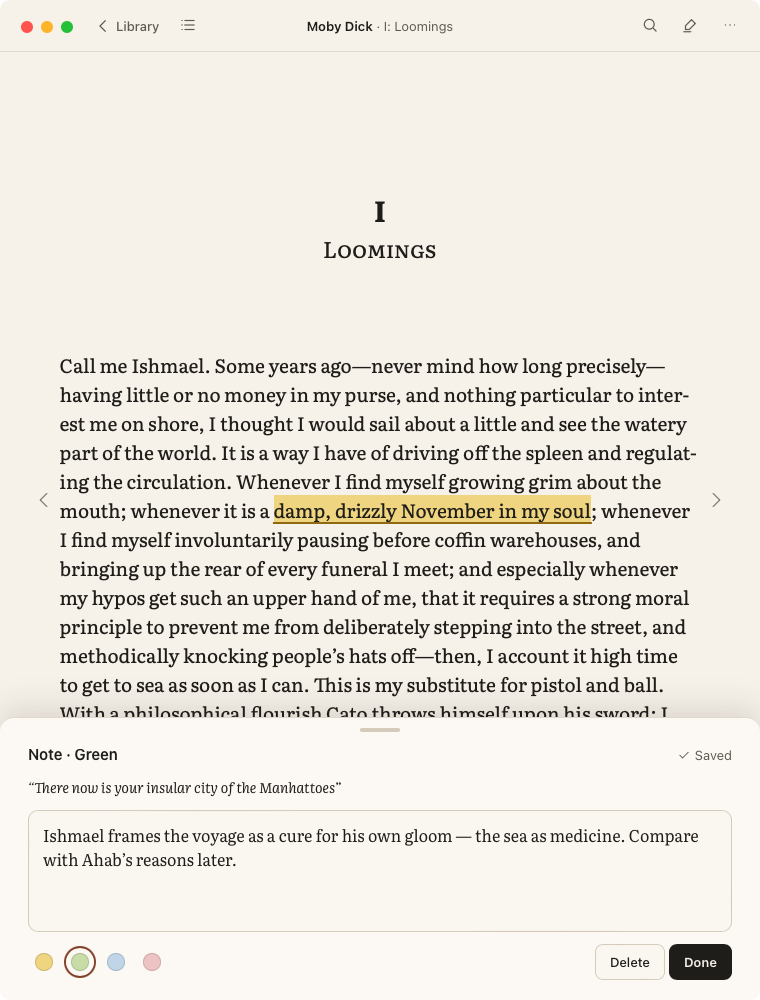
- Matches the mock: below 1240 px the note is a bottom sheet with its grip, “Note · Green” and “Saved”, the quote in italics, the field, the colours, and Delete and Done.
- expectedAt this width the passage falls lower on its page than in the mock, so the sheet covers it. The page is laid out as the book flows.
Screens 03 and 14 — the top bar (item 4)

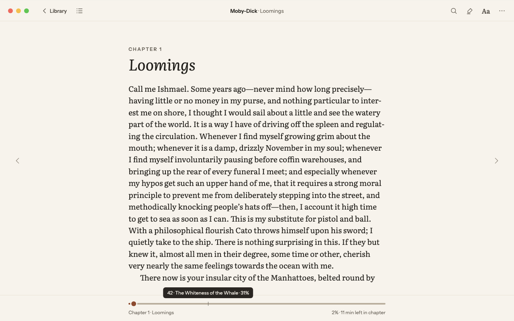

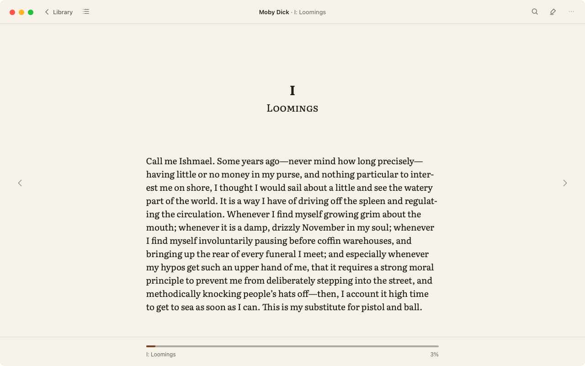
- Contents now sits beside Library; Search and Notes join ⋯ on the right, as drawn. Aa arrives in Phase 6.
G11 — Re-attach (provisional, item 12)
- In the Notes tab, a highlight that could not be placed in a changed edition is listed under “Couldn't place” with its quote, “The book file changed after this was saved.” and Re-attach.
- Re-attach closes a floating Navigator and shows a pill at the bottom: “Select the passage for “…” · Cancel”.
- The next selection shows the bar with only “Attach here” and “Cancel”. Attaching keeps the colour and note and says “Highlight re-attached”.
- Tested end to end (
A9-reimport).